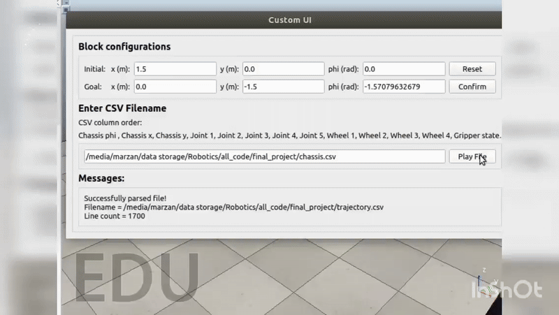

My Projects
🤖 Mobile Manipulator
I found an amazing specialization named Modern Robotics: Mechanics, Planning, and Control. I started my quest for robotics by enrolling in this specialization. I learned concepts like forward/inverse kinematics, dynamics, trajectory planning, control, mobile robot odometry, and grasping. The highlight was the capstone project where I built a Python software for a pick-and-place mobile manipulator simulation in CoppeliaSim.
🤖 Autonomous Docking
This project focused on building an autonomous docking system for a mobile robot. Using an Intel RealSense camera together with AprilTag markers, the robot was able to detect its charging station and align itself correctly for docking. The RealSense camera provided the robot with both color and depth information, while AprilTags acted as unique visual markers to guide the robot’s approach. By combining these two, the robot could automatically recognize the dock, adjust its position, and move forward until it was properly connected. This project made it possible for the robot to recharge itself without human help, which is a key step toward long-term autonomy.

🤖 Autonomous Mobile Robot
For this project, I built a ROS1-based autonomous mobile robot designed to operate with minimal human intervention. The robot used a LiDAR sensor for environment perception and an encoder-based differential drive system for motion control. The main purpose of this robot was to monitor patients during the COVID-19 pandemic, reducing direct contact and keeping healthcare workers safe. To achieve this, I developed the entire navigation stack from scratch, enabling the robot to map its surroundings, plan safe paths, and move around fully autonomously. This work demonstrated how mobile robots can play an important role in healthcare support during times when minimizing human contact is critical.

🤖 AI Planner & Dementia Care Robot
I worked on developing an AI Planner-based autonomous caregiving system to support people with dementia. The system was designed for the Stretch robot, which was deployed in households to provide daily assistance. As part of this project, I created a vision-based autonomous docking system so that the robot could recharge itself and operate continuously. I also implemented a PDDL-based AI planner combined with Behavior Trees to automate caregiving protocols. The overall system was a combination of an AI-based planner and ROS action servers, enabling features such as calling, navigation, listening, speaking, and interactive reminders. The planner decided what to do, while the action servers executed those tasks in real time. The software stack was built using C++ for the planner and robot protocols, and an Android application was developed to provide communication and visual reminders for the user. This project demonstrated how AI planning + robotic action execution can be integrated into real-world caregiving, helping dementia patients maintain independence and safety at home.